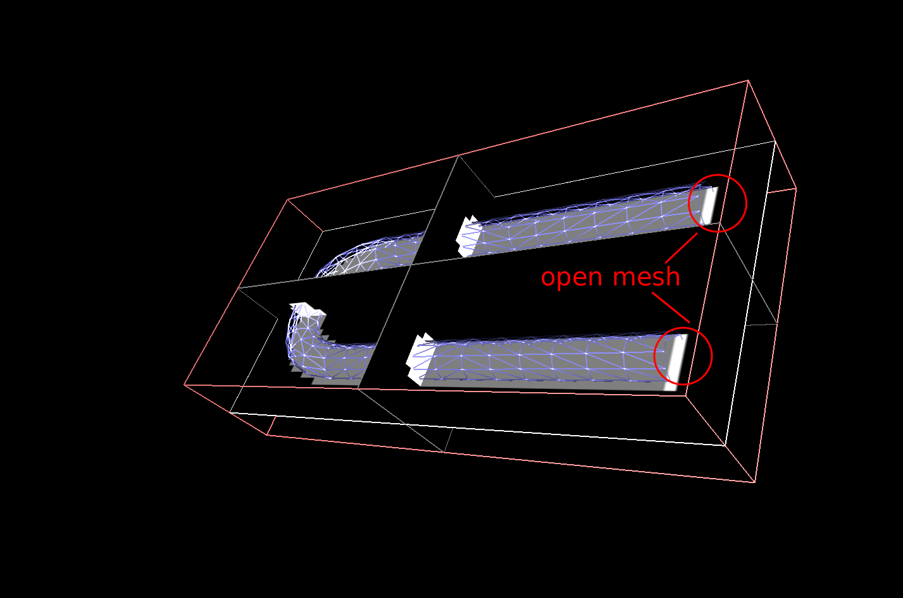

PluginImage openMeshToImage Example
This scene shows an example of the image plugin. It constructs a 3D voxel image from a surface mesh (cf. MeshToImage.scn) however
in this case the mesh given is not a closed one, which means with holes. It shows also the possiblity of filling holes in the mesh
from the 3D voxel image.
To run it, you need to load image Plugin using the Plugin Manager of the GUI, or the command line.
